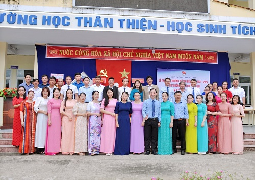
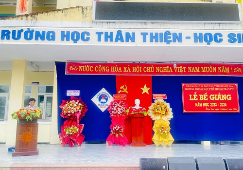
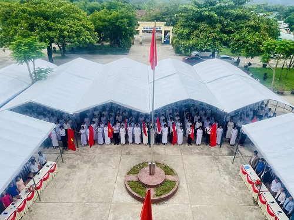

Thực hiện kế hoạch năm học 2023-2024, nhằm báo cáo những hoạt động, kết quả đạt được trong năm học qua và tuyên dương, khen thưởng cho các cá nhân có thành tích xuất sắc trong năm học 2023-2024.
Về dự với buổi lễ bế giảng, nhà trường vinh dự đón tiếp đồng chí Trần Thị Hằng - Phó Bí thư thường trực Huyện ủy Hiệp Đức, đồng chí Nguyễn Văn Nam - Chủ tịch UBND huyện, đồng chí Huỳnh Đức Viên - Phó Chủ tịch HĐND huyện, đồng chí Lê Văn Thuận - Chủ tịch HKH huyện, cùng các đồng chí lãnh đạo xã Bình Lâm, Bí thư Đoàn các xã có học sinh theo học đến dự và nhận bàn giao học sinh về sinh hoạt hè tại địa phương.
BCH Đoàn trường cũng đã phối hợp tổ chức Lễ tri ân và trưởng thành cho học sinh niên khóa 2021-2024, tuyên dương khen thưởng học sinh 3 tốt cấp trường và khen thưởng hội thi Bí thư chi đoàn giỏi.
Em Lê Thị Phương Uyên - Đại diện cho 181 học sinh khối 12 nói riêng và gần 700 học sinh toàn trường nói chung đọc bài phát biểu tri ân đầy xúc động và có lẵng hoa tri ân gửi đến toàn thể quý thầy cô giáo.
Một số hình ảnh tại lễ bế giảng, tri ân và trưởng thành, tuyên dương học sinh 3 tốt và Bí thư chi đoàn giỏi của nhà trường:
📌 Đây Là Lễ Bế Giảng Cuối Cùng Trong Thời Tuổi Học Trò